地政学
コロンボはインド洋の航路、港湾投資、南アジア外交、対外債務、観光回復を受け止める商都です。首都機能の一部はスリ・ジャヤワルダナプラ・コッテへ移りましたが、港と金融の判断は今も島全体の生活へ届く街です。
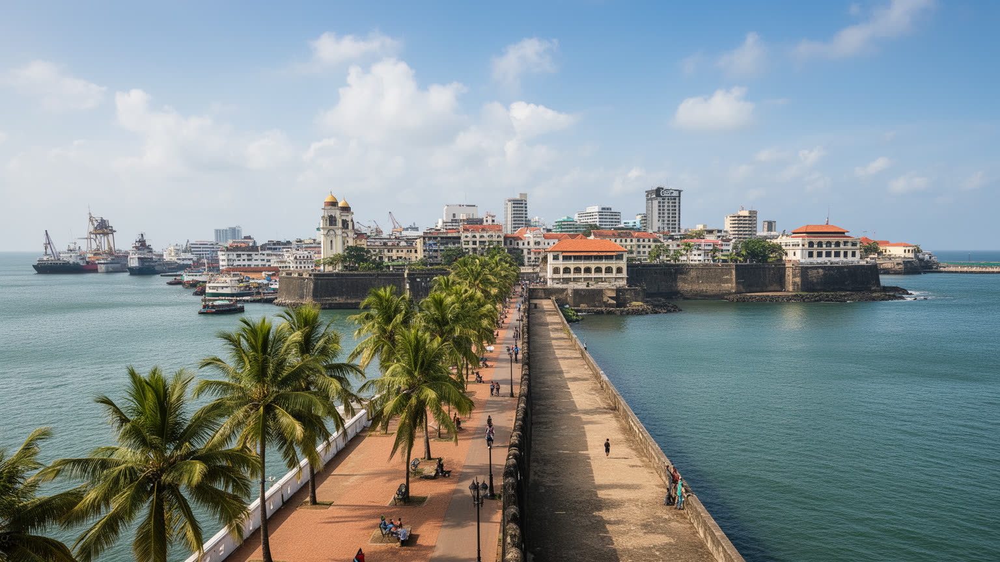
🇱🇰 スリランカ / 西部州 / World City Atlas
インド洋の港、金融街、植民地期の街路、仏教寺院、ヒンドゥー寺院、モスク、教会、鉄道、露店、市場、海岸再開発が、国家の商業と日常を重ねる都市です。
都市の骨格
コロンボは、港湾、鉄道、金融街、植民地期の行政地区、寺院やモスク、市場、海辺の再開発が近距離で重なる都市です。商業の速度と島の宗教的な暦が、同じ通りで出会います。
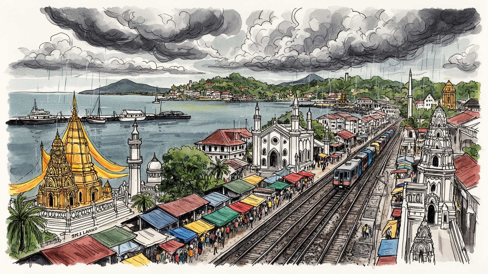
コロンボはインド洋の航路、港湾投資、南アジア外交、対外債務、観光回復を受け止める商都です。首都機能の一部はスリ・ジャヤワルダナプラ・コッテへ移りましたが、港と金融の判断は今も島全体の生活へ届く街です。
雇用は港湾、金融、行政、建設、観光、IT、卸売、小売、運輸、家事労働に広がります。高層オフィスと市場の露店、港の夜勤、鉄道通勤、送金に頼る家計が近く、物価と為替が働き方と家計の余白を大きく左右します。
仏教寺院、ヒンドゥー寺院、モスク、教会、植民地建築、シンハラ語、タミル語、英語が街路に並びます。祭礼、断食明け、日曜礼拝、寺院参拝が観光以前の日常暦を作り、多民族の緊張と共存も街角にも深く映します。
海岸散歩、旧市街市場、寺院巡りは魅力ですが、住民には渋滞、家賃、洪水、暑さ、公共交通、学校、医療、物価が現実です。旅は名所だけでなく、商いと祈りが暮らしを支える路地を読む時間でもあります。海風が吹きます。
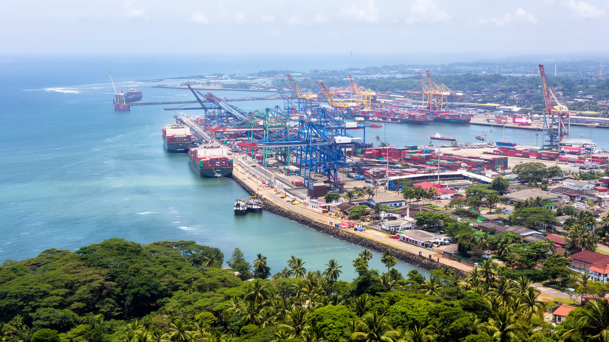
コロンボの都市としての力は、インド洋に開く港から始まります。アラビア海、ベンガル湾、マラッカ海峡を結ぶ航路の途中にあり、コンテナ、燃料、衣料品、食料、建材、観光客、金融サービスが港を通って島へ入ります。港湾は単なる物流施設ではなく、税関、倉庫、保険、銀行、修理、トラック輸送、港湾労働、警備、清掃を生む雇用の束です。外から見ると高層ビルと海岸線が目立つが、都市の日常は船の入港、通関の遅れ、燃料価格、為替、道路渋滞にも左右されます。近年の港湾拡張や海岸再開発は、国際的な投資と地政学的な関心を呼び、スリランカがどの国とどの条件で結びつくかを住民の生活問題に変えます。港に近いことは商機である一方、高潮、浸水、排水不良、港湾汚染、沿岸の公共空間の不足も抱え込みます。港の周辺には漁業、倉庫、低所得住宅、軍事的な警備、観光用の水辺が隣り合い、誰が海へ近づけるのかも都市政治の問題になります。港湾投資が雇用や公共交通へ戻らなければ、海辺の成長は囲われた景観にとどまります。港の利益を市民が感じるには、通勤路、岸壁周辺の安全、技能訓練、環境監視、災害時の補給網まで整える必要があります。コロンボを読む時、海は美しい背景ではなく、島国経済の入口であり、債務、雇用、災害リスクが集まる都市の前面です。こうした細部まで見ると、港と金融だけでは説明できない生活の厚みが現れ、島国の商都が危機後に何を守り直そうとしているかが分かります。
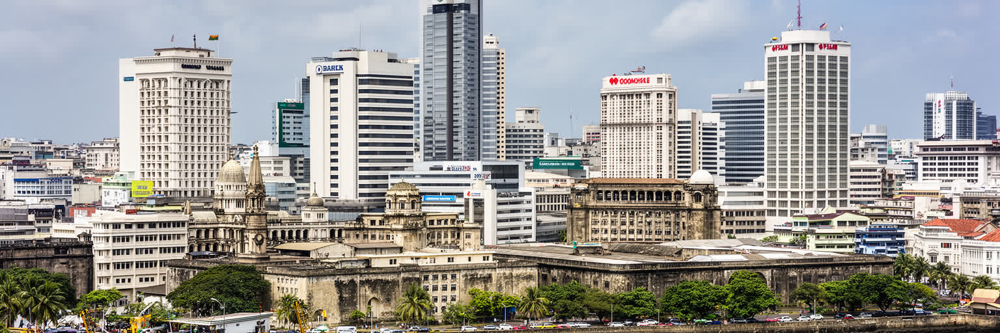
コロンボは法的な首都機能をすべて抱えるわけではありませんが、スリランカの経済と制度を動かす実務の多くを集めています。フォート地区とその周辺には中央銀行、商業銀行、保険会社、企業本社、港湾関連企業、ホテル、報道機関、官庁機能が近く、為替、金利、輸入、観光、建設、雇用の判断が同じ通勤圏で交差します。経済危機後の都市では、国際金融機関との交渉、債務再編、燃料と食料の輸入、補助金、税制、観光回復が家計の実感と直結します。オフィス街の数字は、バス代、薬の価格、学校の費用、屋台の仕入れ、海外で働く家族からの送金に形を変えます。金融都市としてのコロンボを読むには、銀行の高層建築だけでは足りません。両替商、携帯送金、金を担保にする小口金融、商店の掛け売り、海外就労の手数料までが都市の信用を作ります。国家の制度が近いほど、抗議や不満も中心部に集まりやすいです。燃料不足や停電が記憶に残る都市では、政策の信頼は抽象的な評価ではなく、翌日の通勤や店の営業が続くかで測られます。外国資本のビル、地元銀行の窓口、小さな両替店、税務署が同じ地区に並ぶため、世界経済と家庭の財布の距離が短いです。コロンボは島の商都であると同時に、経済政策の痛みが街路に現れる場所でもあります。こうした細部まで見ると、港と金融だけでは説明できない生活の厚みが現れ、島国の商都が危機後に何を守り直そうとしているかが分かります。
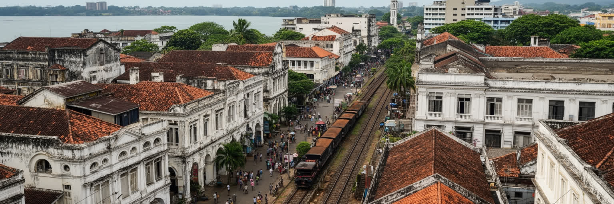
コロンボの都市形態には、ポルトガル、オランダ、英国の植民地支配が層のように残ります。フォートという名は要塞都市の記憶を示し、ペターの市場街、海沿いの行政建築、鉄道駅、教会、倉庫、運河、湖、庭園都市的な住宅地が、港を中心に組み立てられてきました。独立後の都市はその形を消すのではなく、商業、官庁、観光、教育、交通へ使い直しています。植民地建築は美しい写真の対象になりますが、その背後には交易の独占、労働、民族分類、土地所有、港湾支配の歴史があります。旧い建物を保存することは、過去を飾るだけではなく、誰の記憶を残し、誰の痛みを語るかを選ぶ行為でもあります。近年の再開発は旧市街と新しい高層地区の距離を縮める一方、小さな商店、倉庫労働、古い住宅、宗教施設の場所を圧迫することがあります。鉄道駅や市場の混雑は、植民地期に作られた中心が今も島中の人と物を集めている証拠です。保存と更新の間で、歩道、日陰、排水、家賃、公共交通をどう整えるかが都市形態の質を決めます。観光客が撮るファサードの裏では、修繕費、権利関係、消防、耐震、商店の賃料が現実の課題になります。コロンボを歩くと、豪華なホテルの隣に市場があり、英国風の建物の向こうに寺院の音が聞こえます。都市の魅力は、植民地遺産を単なる景観ではなく、現在の商いと生活が使い直す場所として読める点にあります。こうした細部まで見ると、港と金融だけでは説明できない生活の厚みが現れ、島国の商都が危機後に何を守り直そうとしているかが分かります。
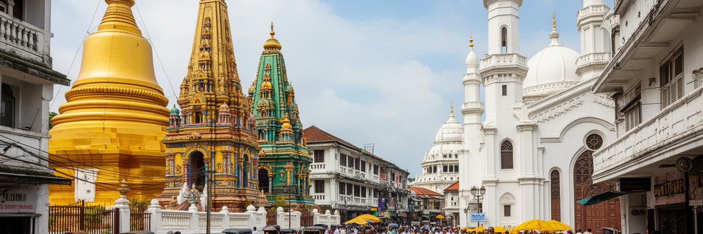
コロンボでは、仏教寺院、ヒンドゥー寺院、モスク、教会が近い距離で街路の時間を作っています。白い仏塔、色彩の濃いゴープラム、金曜礼拝へ向かう人、日曜の教会、祭礼の行列、線香、太鼓、鐘、断食明けの食事は、観光資源である前に住民の生活の暦です。シンハラ、タミル、ムスリム、バーガー、マレーなどの歴史が都市に重なり、言語、食、服装、学校、葬送、商売のつながりを形作ります。多宗教性は調和だけを意味しません。内戦の記憶、民族間の不信、爆弾事件への警戒、政治的な利用、差別や監視も街の背景にあります。それでも日々の市場や職場では、違う信仰の人が同じバスに乗り、同じ雨宿りをし、同じ港湾経済に関わります。宗教施設は祈りの場であると同時に、教育、慈善、災害時の支援、相談の拠点にもなります。多言語の案内、礼拝時間への配慮、宗教食を扱う店、葬送の習慣は、都市が住民を尊重できているかを示す細部です。観光で宗教施設を訪れる時も、靴、服装、写真、寄付、混雑への配慮が地域との関係を左右します。コロンボの多宗教を読むには、寺院の外観だけでなく、祭礼の交通整理、食の禁忌、学校の休日、近所づきあいまで見る必要があります。祈りは街を分ける線にも、生活をつなぐ橋にもなり得ります。こうした細部まで見ると、港と金融だけでは説明できない生活の厚みが現れ、島国の商都が危機後に何を守り直そうとしているかが分かります。
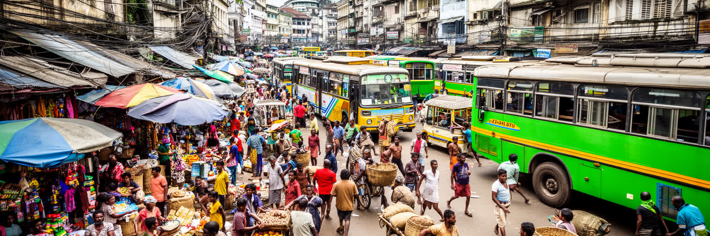
ペター周辺の市場、卸売街、露店、バス停、荷運びの通路は、コロンボの経済を最も身体的に感じられる場所です。衣料品、香辛料、米、魚、果物、携帯電話、金物、宗教用品、学用品が狭い通りに集まり、商人、運転手、学生、家事労働者、観光客、港湾関係者が行き交います。市場は混雑して見えますが、仕入れ、信用、値段交渉、家族労働、日雇い、配達、保管の細かな秩序で動きます。経済危機後の物価上昇は、店の仕入れと家庭の献立を同時に変え、通貨の弱さや燃料不足は商いの時間を乱しました。公式統計に表れにくい仕事ほど、都市の食と日用品を支えています。女性の小商い、地方から来る農産物、港から入る輸入品、寺院の祭礼需要、学校の新学期用品が同じ街区で結びつきます。市場の労働は暑さ、雨、騒音、荷物の重さ、警察や許可制度、借金の返済と向き合う仕事でもあります。店先の信用は家族や同郷者のつながりで保たれ、値上げの時には客との関係も試されます。再開発や衛生改善は必要でも、露店を排除するだけでは生活の安全網を壊してしまいます。コロンボを市場から読むと、グローバルな港湾都市が、実は小さな信用と手作業の連鎖で食べ続けていることが分かります。市場の声は、都市経済の最前線です。こうした細部まで見ると、港と金融だけでは説明できない生活の厚みが現れ、島国の商都が危機後に何を守り直そうとしているかが分かります。
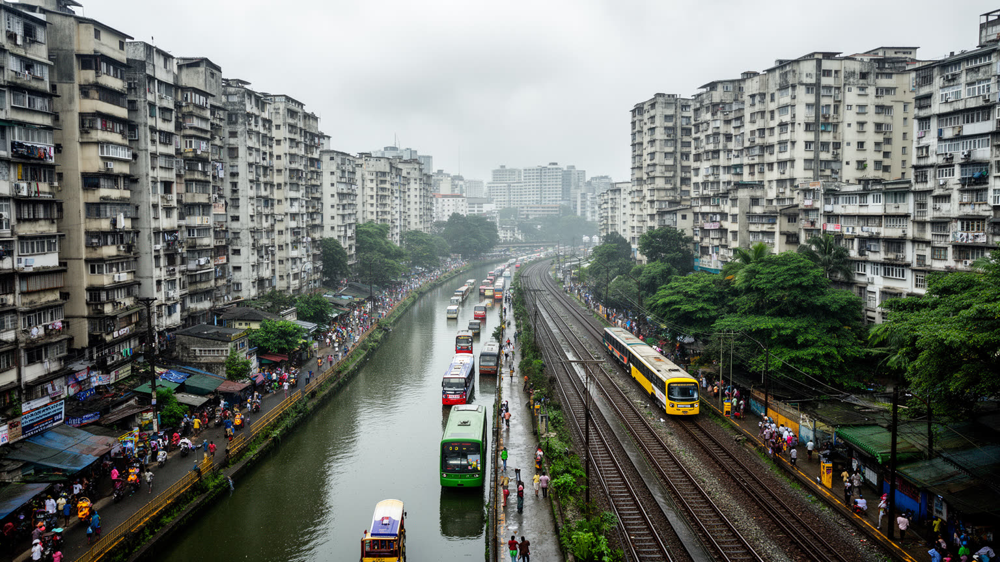
コロンボの暮らしは、海に近い都心、湖と運河の周辺、旧市街の密集地、郊外の住宅地、鉄道とバスで結ばれる広域通勤圏で成り立ちます。市域は小さいが、実際の生活圏はコロンボ県、西部州の周辺都市、港湾、空港方面まで広がります。中心部に近いほど仕事や学校、病院、商店へ行きやすい一方、家賃、土地価格、渋滞、騒音、浸水、老朽住宅が重くなります。郊外へ出れば住宅は広がるが、通勤時間と交通費が家計を削ります。バス、鉄道、三輪タクシー、徒歩は住民の生活を支えますが、混雑、遅延、暑さ、道路の危険は毎日の疲労になります。低所得世帯の住まいは、水辺や鉄道沿い、再開発予定地に置かれやすく、立ち退きや移転は仕事、学校、近所の支えを断つことがあります。海外就労の送金で家を直す家族、都心の仕事へ通う若者、家事労働で住宅地を移動する女性は、同じ交通網を違う条件で使っています。子どもの通学路、高齢者の通院、夜に帰る労働者の安全も、住宅の価値を決める条件です。住宅問題は建物の数だけではなく、通勤できるか、洪水時に安全か、家族の介護や保育へ届くかという接続の問題です。コロンボの都市計画が成熟するには、高層開発だけでなく、手頃な住宅、公共交通、排水、歩道、近所の市場を一体で考える必要があります。こうした細部まで見ると、港と金融だけでは説明できない生活の厚みが現れ、島国の商都が危機後に何を守り直そうとしているかが分かります。
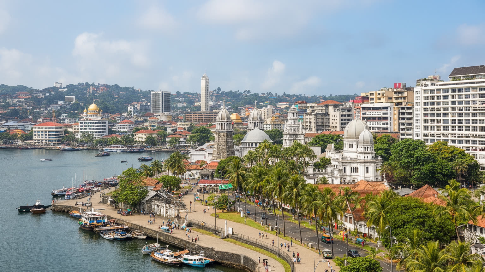
コロンボ観光は、ビーチリゾートの入口というだけではありません。訪問者はフォート地区、ペター市場、ガンガラーマ寺院、ヒンドゥー寺院、モスク、教会、国立博物館、独立記念広場、ガル・フェイス、海岸のホテル、鉄道駅、カフェを巡り、港町と多宗教都市の重なりを体験します。再開発は海岸線や旧市街の景観を整え、歩行者空間、ホテル、商業施設、イベントを増やす可能性を持ちます。一方で、観光客に見せやすい街を作る過程で、露店、小商い、低所得住宅、古い倉庫、日常の宗教活動が周縁へ押される危険もあります。歩きやすさは外から来る人だけでなく、住民が学校、病院、駅、市場、海辺へ安全に行けることを意味しなければなりません。コロンボの魅力は、整った観光地区と雑然とした市場を別々にするのではなく、両方が同じ都市の歴史を語る点にあります。食も重要な入口で、米とカレー、ホッパー、コットゥ、紅茶、屋台の軽食は、旅の楽しみであると同時に通勤者の昼食です。ガイド、運転手、清掃、警備、調理、翻訳の仕事へ収益が届くかも観光都市の質を左右します。再開発の成否は、写真に映る景色より、地元の商人が残れるか、夜も安心して歩けるか、公共交通で届くかで決まります。観光は都市を飾る産業ではなく、暮らしと記憶を扱う政策です。こうした細部まで見ると、港と金融だけでは説明できない生活の厚みが現れ、島国の商都が危機後に何を守り直そうとしているかが分かります。
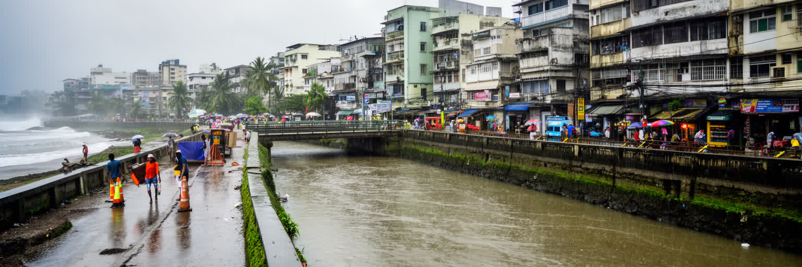
コロンボは熱帯モンスーンの都市であり、強い日差し、湿気、海風、雨季の豪雨、低地の浸水、海面上昇リスクとともに暮らしています。湖、運河、排水路、海岸が都市の魅力を作る一方、詰まった排水、埋め立て、舗装、低所得地区の水辺立地は洪水被害を広げます。短時間の豪雨は道路を止め、学校、病院、市場、港湾、通勤へ影響します。暑熱は屋外労働者、露店商、港湾作業、建設労働、バス待ちの人、高齢者、子どもに重く、冷房を使える世帯と使えない世帯の差は健康格差になります。災害に強い都市とは、排水ポンプや堤防だけでなく、住民が避難できる道、涼める公共施設、停電時の情報、清潔な水、感染症対策、湿地の保全を持つ都市です。ごみの詰まりを減らす清掃、冠水時に止まらない医療、学校や宗教施設を使った避難、外国人や少数派へ届く多言語情報も防災の一部になります。湿地を埋める開発は短期の土地を生むが、長期には水を逃がす都市の余白を失わせます。気候変動は遠い将来の話ではなく、家賃の安い場所ほど危険が集まりやすいという社会問題でもあります。コロンボが海辺の商都として成長を続けるなら、再開発は景観と投資だけでなく、水の流れと暑さに弱い人の生活を優先して設計される必要があります。こうした細部まで見ると、港と金融だけでは説明できない生活の厚みが現れ、島国の商都が危機後に何を守り直そうとしているかが分かります。
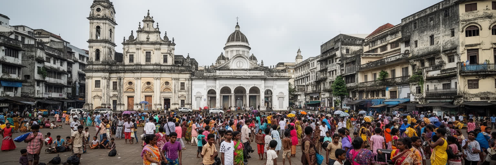
コロンボの街路には、内戦後の緊張、爆弾事件への警戒、経済危機への怒り、市民抗議、選挙、宗教的な不信、復興への期待が重なっています。都市は商業と観光の顔を持つが、住民の記憶には検問、停電、燃料行列、物価高、海外へ出稼ぎに行く家族、若者の失業、少数派への不安も刻まれます。こうした課題を外から単純に危険や混乱として見ると、日常を支える市民社会を見落とします。教会、寺院、モスク、学校、労働組合、学生、専門職、女性団体、地域組織、報道、アーティストは、危機の中で支援、抗議、記録、対話の場を作ってきました。都市の安全は警備だけではなく、信頼できる公共サービス、言語と宗教への配慮、仕事、住宅、教育、医療があって初めて強くなります。SNSで広がる抗議、広場に集まる家族、物価を記録する店主、宗教を越えて支援を運ぶ団体は、制度の弱さを補う市民の力でもあります。少数派が安心して礼拝し、若者が仕事を探し、女性が夜に移動できるかは、都市の自由を測る具体的な基準になります。コロンボの社会課題を読むことは、政治的な出来事を年表で追うだけではありません。市場の価格、バスの混雑、学校の選択、宗教行事の警備、若者が国外へ向かう理由を通じて、国家の危機が生活へどう届くかを見ることです。記憶を隠さず公共空間で語れるかが、都市の回復力を左右します。こうした細部まで見ると、港と金融だけでは説明できない生活の厚みが現れ、島国の商都が危機後に何を守り直そうとしているかが分かります。
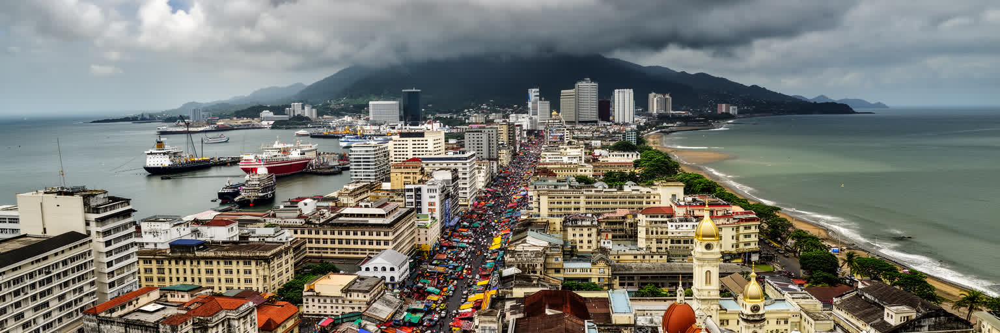
コロンボを理解するには、スリランカ最大の商都、インド洋の港、植民地都市、多宗教の街、経済危機後の生活都市という複数の顔を同時に見る必要があります。港は世界の航路と島の家計を結び、金融街は国際的な債務と日々の物価を結び、市場は輸入品と農村の産物を住民の食卓へ運びます。寺院、モスク、教会は観光名所である前に、家族の節目と共同体の支援を担う場所です。海岸の再開発は新しい都市像を作りますが、その足元には洪水、家賃、露店の場所、通勤、言語、宗教、若者の仕事があります。コロンボの重要性は、巨大な経済規模だけでは測れないです。南アジアと中東、東南アジアを結ぶ海の交差点にあり、島国が外部資本、観光、移民送金、気候リスク、多民族社会とどう向き合うかを見せる都市だからです。旧い植民地建築と新しい高層開発、低地の市場と海辺のホテル、祈りの音と港の機械音を分けずに読むと、コロンボは単なる玄関口ではなく、スリランカの矛盾と回復力が凝縮された都市として立ち上がります。旅で得られる印象を生活へ戻して考えるほど、港湾投資、宗教的共存、労働、気候適応が一つの都市課題としてつながります。外へ開く港と内側の生活を同じ地図で読むことが、この都市の核心に近づく方法です。こうした細部まで見ると、港と金融だけでは説明できない生活の厚みが現れ、島国の商都が危機後に何を守り直そうとしているかが分かります。